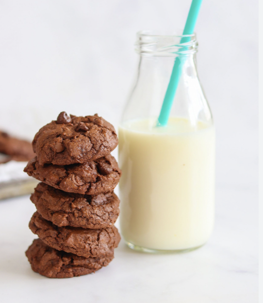
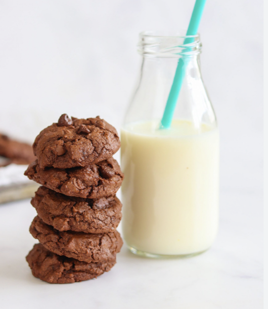
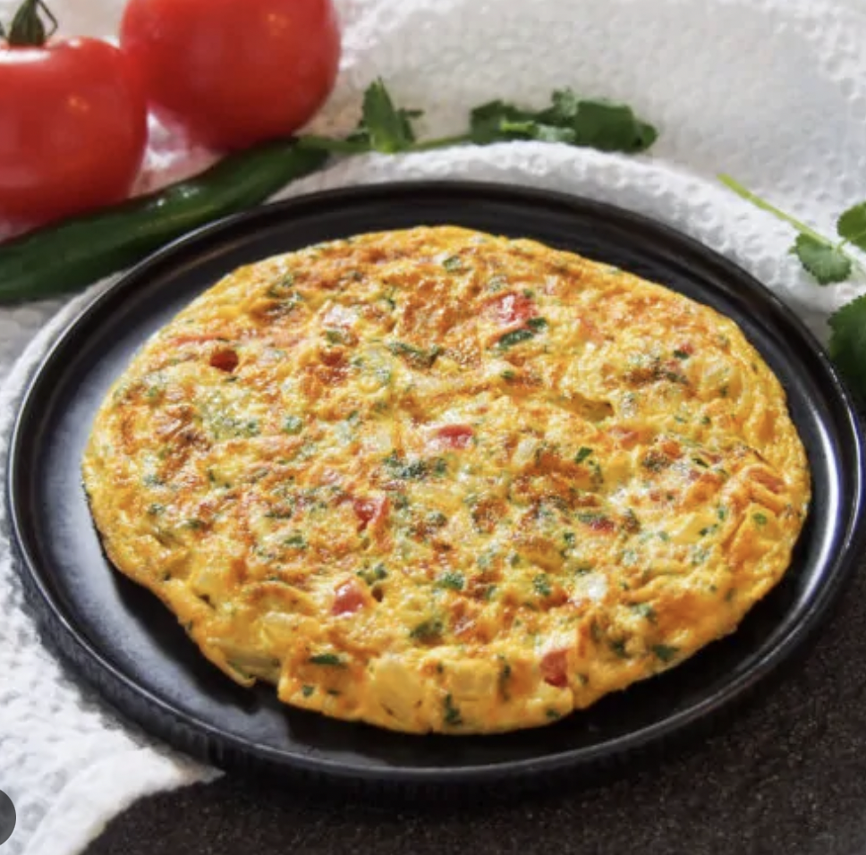
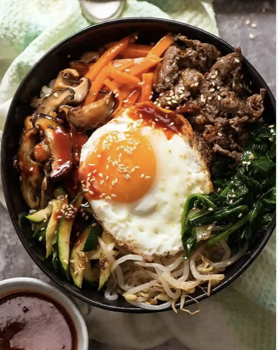
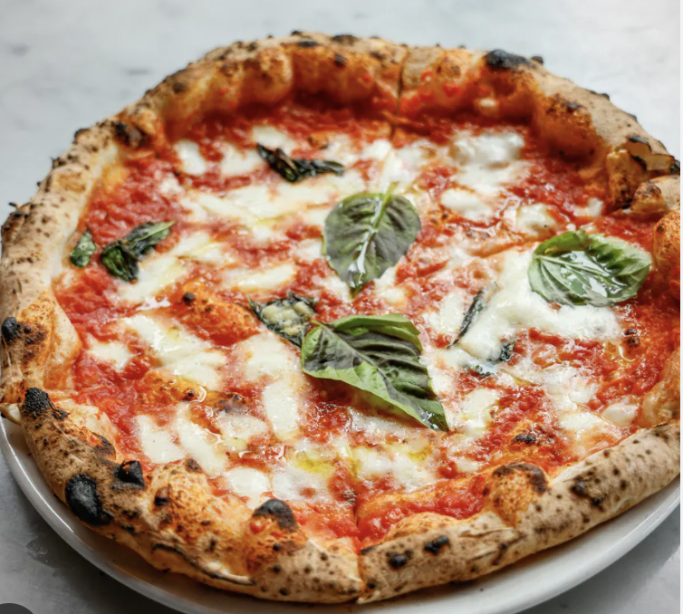
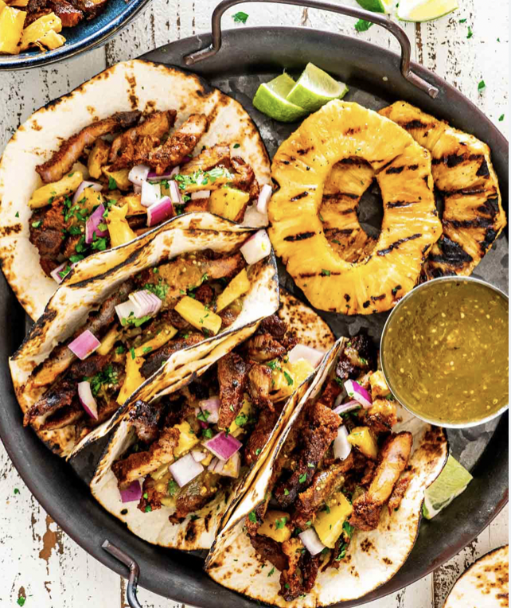

Double Chocolate Cookies
Origin: Michigan
Source: Family Recipe
Category: Dessert

My daughter learned to make these cookies at a baking camp at Zingermanns and has tweaked the recipe to fit the taste buds of her siblings. They are extremely sugary so the salt helps to balance it. Note, these cookies are best eaten very quickly.
Recipe Ingredients
- Unsalted butter
- Granulated Sugar
- Packed light or dark brown sugar
- Large egg
- Pure vanilla extract
- Semi-sweet chocolate chunks (melted)
- All-purpose flour
- Natural unsweetened cocoa powder
- Baking soda
- Salt
- Semi-sweet chocolate chunks
Recipe Steps
- In a mixing bowl cream together the butter, granulated sugar, and brown sugar
- Add the egg and vanilla extract and beat well
- Add the melted chocolate
- In a separate bowl combine the flour, baking soda, cocoa powder and salt
- Combine the wet and dry ingredients
- Add the unmelted chocolate chunks.
- Form 15 cookies and place on a baking sheet.
- Cook for 12 to 13 minutes at 350 degrees.
Additional Food images
 

Omelette
Origin: Ancient Persia
Source: Personal Recipe
Category: Breakfast
An omelette is a versatile and delicious dish that brings together the simplicity of eggs with a variety of flavorful ingredients. Commonly associated with breakfast, this savory dish is made by whisking eggs and cooking them in a pan with fillings such as cheese, vegetables, meats, or herbs.
Recipe Ingredients
- Unsalted butter
- teaspoon salt
- 1/4 cup of heavy cream
- 2 Large egg
- spinach
- 1/2 tomato
Recipe Steps
- In a mixing bowl, crack the eggs, mix with heavy cream, salt, tomato
- Heat up a pan and add 1 tbsp of butter
- Add the egg mixture once butter has melted
- Cook on medium heat for 3 minutes
- Add spinach on top
- Flip and cook for another 2 minutes
- Fold it in half
- Ready to serve
Additional Food images
Bibimbap
Origin: Korea
Source: Chat GPT
Category: Main Dish
Bibimbap, a popular Korean dish, translates to "mixed rice." It is a vibrant and nutritious bowl that typically includes sautéed vegetables, a protein, a fried egg, and a flavorful gochujang (red chili paste) sauce. This dish showcases the balance of textures and flavors that Korean cuisine is known for.
Recipe Ingredients
- 2 cups cooked rice
- 1 cup julienned carrots
- 1 cup sliced shiitake mushrooms
- 1 cup spinach, blanched
- 1 cup bean sprouts, blanched
- 1 cup ground beef, seasoned and cooked
- 4 fried eggs
- Sesame oil
- Soy sauce
- Gochujang (red chili paste)
Recipe Steps
- Divide the cooked rice into serving bowls.
- Arrange the sautéed vegetables and cooked beef on top of the rice.
- Top each bowl with a fried egg.
- Drizzle sesame oil, soy sauce, and gochujang over the ingredients.
- Mix everything together before eating to enjoy the diverse flavors.
Additional Food images
Margherita Pizza
Origin: Italy
Source: Chat GPT
Category: Main Dish
Margherita Pizza is a classic Italian dish that embodies simplicity and flavor. Originating in Naples, this pizza is a celebration of fresh ingredients and traditional techniques. The combination of ripe tomatoes, mozzarella cheese, and fragrant basil creates a harmonious and satisfying culinary experience.
Recipe Ingredients
- 1 pizza dough
- 1 cup tomato sauce
- 2 cups fresh mozzarella, sliced
- Fresh basil leaves
- Olive oil
- Salt and pepper to taste
Recipe Steps
- Preheat your oven to 475°F (245°C).
- Roll out the pizza dough on a floured surface to your desired thickness.
- Spread a layer of tomato sauce evenly over the dough.
- Place the sliced mozzarella on top of the sauce.
- Bake in the preheated oven for 12-15 minutes or until the crust is golden and the cheese is bubbly.
- Remove from the oven, sprinkle fresh basil leaves, drizzle with olive oil, and season with salt and pepper.
- Slice and serve hot
Additional Food images
Tacos al Pastor
Origin: Mexican
Source: Chat GPT
Category: Main Dish
Tacos al Pastor is a mouthwatering Mexican street food, inspired by the shawarma cooking method introduced by Lebanese immigrants. This dish features marinated and spit-roasted pork, pineapple, and a variety of flavorful toppings. The combination of savory and sweet makes it a beloved Mexican street food classic.
Recipe Ingredients
- 1 lb pork shoulder, thinly sliced
- 1 cup pineapple, diced
- Corn tortillas
- 1 onion, finely chopped
- 1 bunch fresh cilantro, chopped
- 2 limes, cut into wedges
- Marinade: Achiote paste, garlic, vinegar, oregano, cumin, salt, pepper
Recipe Steps
- Mix the marinade ingredients and coat the pork slices. Marinate for at least 2 hours or overnight.
- Thread the marinated pork onto a vertical spit or skewers.
- Grill or roast until cooked through and slightly charred.
- Warm the corn tortillas and assemble the tacos with the cooked pork, diced pineapple, chopped onion, and cilantro.
- Serve with lime wedges on the side.